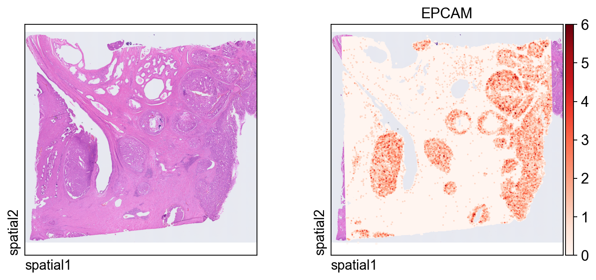
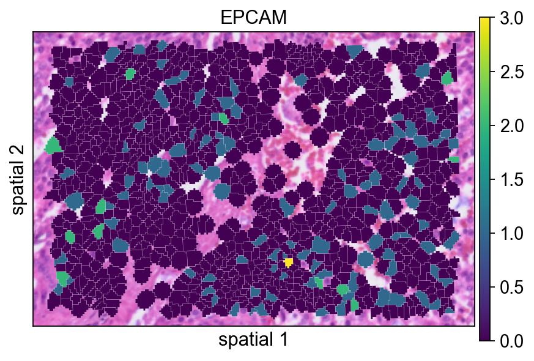
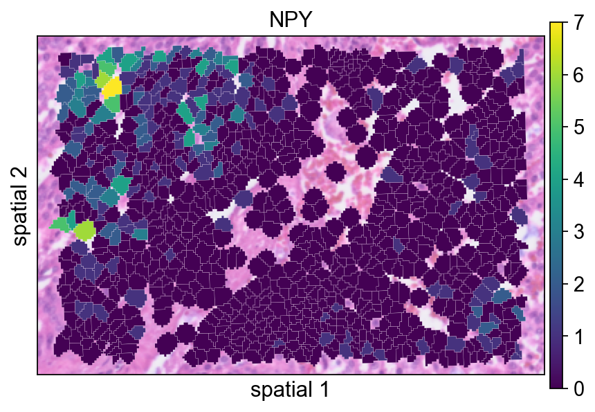
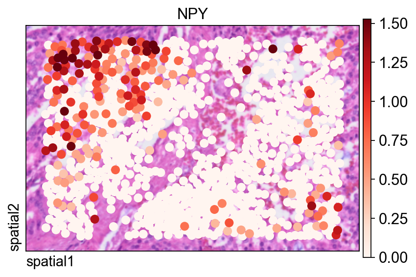

Spatial
Analyze Visium HD data
Visium HD is 10x Genomics' high-resolution spatial transcriptomics workflow for measuring gene expression directly on tissue sections. Compared with earlier lower-resolution spot-based layouts, the practical shift in Visium HD is that analysis often begins from much denser spatial units and then moves between multiple views of the same specimen, such as regular bins and segmentation-derived cells. That makes it especially important to understand not just the expression matrix, but also how coordinates, histology images, and segmentation outputs relate to one another.
This notebook walks through a typical Visium HD workflow in OmicVerse using both the bin-level output and the cell segmentation output from a 10x Genomics run. The example covers four tasks:
- reading Visium HD data into
AnnData, - visualizing gene expression on the tissue image,
- identifying spatially variable genes in a local region and across the full section,
- building a low-dimensional representation for clustering and spatial interpretation.
The code below assumes that the Visium HD output folders have already been downloaded and arranged under data/visium_hd/.
Environment setup
We start by importing OmicVerse and enabling two notebook conveniences:
ov.style(font_path='Arial')sets a consistent plotting style for the figures generated later in the notebook.%load_ext autoreloadand%autoreload 2are optional, but useful during development because edited Python modules are reloaded automatically without restarting the kernel.
import omicverse as ov
ov.style(font_path='Arial')
# Enable auto-reload for development
%load_ext autoreload
%autoreload 2ov.settings.cpu_gpu_mixed_init() initializes OmicVerse in mixed CPU/GPU mode. This is useful for workflows where some preprocessing steps remain CPU-bound while heavier numerical steps can benefit from GPU acceleration when available.
ov.settings.cpu_gpu_mixed_init()Load the Visium HD dataset
Visium HD provides expression measurements at very fine spatial resolution. In practice, two views of the same dataset are often useful:
- a bin-level representation, where counts are stored on a regular grid;
- a cell-segmentation representation, where bins are reassigned to segmented cells.
This notebook demonstrates both. The bin-level object is convenient for inspecting the raw spatial signal and tissue-wide morphology alignment, while the segmentation-level object is more natural for downstream cell-centered analysis, spatial feature discovery, and clustering.
Before loading the matrices, it is often helpful to inspect the directory layout. The helper below prints the folder tree while skipping the analysis directory, which keeps the output focused on files needed for data import.
We download the count data and histology image from the public 10x Genomics Visium HD human prostate cancer FFPE example dataset: https://www.10xgenomics.com/datasets/visium-hd-cytassist-gene-expression-libraries-human-prostate-cancer-ffpe.
from pathlib import Path
ov.utils.print_tree(
Path("data/visium_hd/binned_outputs/square_016um"),
skip_dirs={"analysis"}
)Read the bin-level output
The first object is created from the square_016um directory, which stores Visium HD data binned on a regular grid. This view is especially useful when you want to inspect the native high-resolution signal before committing to any cell-centered interpretation.
A few parameters in ov.io.read_visium_hd() are worth noting:
path: root folder of the selected Visium HD output.data_type='bin': tells OmicVerse to interpret the input as a bin-level matrix rather than segmented cells.cell_matrix_h5_pathandcount_mtx_dir: point to the filtered count matrix in HDF5 and directory form.tissue_positions_path: provides spatial coordinates for each bin.hires_image_path,lowres_image_path, andscalefactors_path: link the molecular data to the tissue image for plotting.
adata_hd = ov.io.read_visium_hd(
path="data/visium_hd/binned_outputs/square_016um",
data_type="bin",
cell_matrix_h5_path="filtered_feature_bc_matrix.h5",
count_mtx_dir='filtered_feature_bc_matrix',
tissue_positions_path = "spatial/tissue_positions.parquet",
# if figure and scalefactor stored in outs/spatial
hires_image_path="spatial/tissue_hires_image.png",
lowres_image_path="spatial/tissue_lowres_image.png",
scalefactors_path="spatial/scalefactors_json.json",
)The returned object is a standard AnnData container. At this stage it is useful to quickly inspect the number of observations, genes, and the contents of obs, var, obsm, and uns.
adata_hdThe first plot overlays expression on the tissue image.
Key plotting arguments:
color=[None, "EPCAM"]: show both the histology image alone and the expression ofEPCAM.size: marker size for each spatial unit.linewidth=0: removes marker outlines for a cleaner dense plot.cmap='Reds': uses a sequential colormap appropriate for nonnegative expression values.
ov.pl.spatial(
adata_hd, color=[None,"EPCAM"],
size=3, linewidth=0,
legend_fontsize=13, frameon=None,
cmap='Reds'
)
Read the cell-segmentation output
We now switch to the segmentation-level output, where observations correspond to segmented cells instead of regular bins. This representation is usually more appropriate for cell-level visualization, spatial feature discovery, and clustering.
Compared with the bin-level import, the main difference is the inclusion of a segmentation file:
data_type='cellseg'activates the cell-segmentation parser.cell_segmentations_pathpoints to thegeojsonfile containing polygon boundaries for segmented cells.
Together, the two objects give complementary views of the same tissue: the bin-level matrix helps you verify raw spatial structure, while the segmentation-level matrix is better aligned with cell-level downstream analysis.
adata_seg = ov.io.read_visium_hd(
path="data/visium_hd/segmented_outputs",
data_type="cellseg",
cell_matrix_h5_path="filtered_feature_cell_matrix.h5",
cell_segmentations_path="graphclust_annotated_cell_segmentations.geojson",
# if figure and scalefactor stored in outs/spatial
hires_image_path="spatial/tissue_hires_image.png",
lowres_image_path="spatial/tissue_lowres_image.png",
scalefactors_path="spatial/scalefactors_json.json",
)This plot shows the same marker, EPCAM, on the segmentation-level object. Because each observation now corresponds to a segmented cell, the spatial pattern is easier to interpret in a cell-centered way.
ov.pl.spatial(
adata_seg, color=[None,"EPCAM"],
size=6, linewidth=0,
legend_fontsize=13, frameon=None,
cmap='Reds'
)
Focus on a local region of interest
Full-tissue plots are useful for context, but detailed inspection is often easier in a smaller window. The helper function below subsets the dataset by spatial coordinates.
Parameter notes:
xlimandylimdefine the rectangular region to keep.adata.obsm["spatial"]stores the x/y coordinates used for spatial filtering.obs_names_make_unique()andvar_names_make_unique()guard against duplicated identifiers after subsetting.
This local zoom is not just cosmetic. For dense Visium HD data, a regional view is often the fastest way to judge whether image structure, segmentation geometry, and gene expression agree before moving on to SVG detection or clustering.
def subset_data(adata, xlim=(24500, 26000), ylim=(5000, 6000)):
x, y = adata.obsm["spatial"].T
bdata = adata[(xlim[0] <= x) & (x <= xlim[1]) & (ylim[0] <= y) & (y <= ylim[1])].copy()
bdata.obs_names_make_unique()
bdata.var_names_make_unique()
return bdata
bdata = subset_data(adata_seg)The next few panels compare different ways of rendering the same segmented region. This is mainly a visualization step, but it is useful for deciding how much of the segmentation boundary should be shown in final figures.
Here the segmentation polygons are rendered without visible borders (edges_width=0). This emphasizes the expression signal itself and is often a good default when the field is crowded.
ov.pl.spatialseg(
bdata,
color="EPCAM",
edges_color='white',
edges_width=0,
figsize=(6, 4),
alpha_img=1,
alpha=1,
legend_fontsize=13,
#cmap='Reds',
#img_key=False,
#alpha=1,
)Adding a small border (edges_width=0.1) helps separate neighboring cells. This usually improves readability when adjacent segments have similar expression values.
ov.pl.spatialseg(
bdata,
color="EPCAM",
edges_color='white',
edges_width=0.1,
figsize=(6, 4),
alpha_img=1,
alpha=1,
legend_fontsize=13,
#cmap='Reds',
#img_key=False,
)
seg_contourpx controls the thickness of the segmentation contour in pixel units. Increasing this value can make boundaries easier to see, especially in presentation figures or when the background image is visually busy.
ov.pl.spatialseg(
bdata,
color="EPCAM",
edges_color='white',
edges_width=0,
figsize=(6, 4),
#library_id='1',
alpha_img=1,
seg_contourpx=1.5,
alpha=1,
legend_fontsize=13,
)
Identify spatially variable genes in the local region
We next run ov.space.svg() on the subsetted region.
Important parameters:
mode='moranI': ranks genes by spatial autocorrelation using Moran's *I*.n_svgs=3000: keeps the top 3,000 candidate spatially variable genes.n_perms=100: uses permutations to estimate statistical significance.n_jobs=8: parallelizes the computation across CPU workers.
bdata=ov.space.svg(
bdata,mode='moranI',
n_svgs=3000,
n_perms=100,n_jobs=8,
)
bdataThe table below is a quick way to inspect the top-ranked genes. moranI measures the strength of spatial autocorrelation, moranI_pval records the significance estimate, and space_variable_features marks genes retained as spatial features.
bdata.var[['moranI','moranI_pval','space_variable_features']].sort_values('moranI',ascending=False)NPY is plotted here as an example of a gene with localized spatial structure. Using a segmented rendering makes it easier to see whether the signal follows coherent cell neighborhoods rather than isolated spots.
ov.pl.spatialseg(
bdata,
color="NPY",
edges_color='white',
edges_width=0.1,
figsize=(6, 4),
alpha_img=0.8,
alpha=1,
legend_fontsize=13,
)
Checking the maximum value in X before normalization is a simple sanity check. It gives a rough sense of the raw count scale in the subsetted object.
bdata.X.max()Normalize and log-transform the local subset
The standard preprocessing step here is:
ov.pp.normalize_total(bdata): normalize each observation to a comparable library size;ov.pp.log1p(bdata): apply a log(1+x) transform to compress the dynamic range.
This usually makes spatial expression maps easier to compare across cells.
ov.pp.normalize_total(bdata)
ov.pp.log1p(bdata)After normalization and log transformation, the value range should be much smaller than in the raw matrix. This confirms that the transformation has been applied.
bdata.X.max()Replotting NPY after preprocessing helps assess how normalization changes the visual contrast of the signal.
ov.pl.spatialseg(
bdata,
color="NPY",
edges_color='white',
edges_width=0.1,
figsize=(6, 4),
alpha_img=0.8,
alpha=1,
legend_fontsize=13,
)
The same gene is also shown with ov.pl.spatial(), which renders observations as points instead of filled segmentation polygons.
Two arguments are especially useful here:
size=1.5: controls the point size for each observation;vmax='p99.2': clips the color scale at the 99.2nd percentile, reducing the influence of extreme outliers on the visual dynamic range.
fig, ax = ov.plt.subplots(figsize=(6, 4))
ov.pl.spatial(
bdata, color="NPY",
size=1.5, linewidth=0,
legend_fontsize=13, frameon=True,
cmap='Reds',vmax='p99.2',
ax=ax,
)
Compute spatially variable genes on the full segmentation-level dataset
After exploring one local region, we repeat SVG detection on the full segmentation object. Here the notebook uses mode='pearsonr', which applies a different criterion than Moran's *I* for detecting spatial structure.
adata=ov.space.svg(
adata_seg,mode='pearsonr',
n_svgs=3000,
)
adataAgain, it is useful to check the value range before preprocessing the full dataset.
adata.X.max()The full dataset is normalized and log-transformed in the same way as the local subset so that downstream dimensionality reduction and clustering operate on a comparable scale.
ov.pp.normalize_total(adata)
ov.pp.log1p(adata)Restrict the matrix to spatially variable genes
Storing adata.raw = adata preserves the full prefiltered object for later reference. The next line subsets the matrix to genes marked in adata.var.space_variable_features, which reduces noise and focuses downstream analysis on spatially informative features.
%%time
adata.raw = adata
adata = adata[:, adata.var.space_variable_features]
adataBuild a neighborhood graph and UMAP embedding
This cell follows the standard sequence of scaling, PCA, graph construction, and UMAP embedding.
Parameter notes:
n_pcs=50in PCA keeps the first 50 principal components.n_neighbors=15defines the size of the local neighborhood used to build the graph.use_rep='scaled|original|X_pca'specifies which processed representationov.pp.neighbors()should use under the OmicVerse convention employed in this workflow. In practice, this cell relies on the PCA representation generated immediately above.
%%time
ov.pp.scale(adata)
ov.pp.pca(adata,layer='scaled',n_pcs=50)
ov.pp.neighbors(adata, n_neighbors=15, n_pcs=50,
use_rep='scaled|original|X_pca')
ov.pp.umap(adata)Leiden clustering partitions the graph into communities. The resolution parameter controls cluster granularity: lower values produce fewer, broader groups, while higher values split the graph more aggressively.
ov.pp.leiden(adata,resolution=0.3)Plotting leiden directly in tissue space is a quick way to judge whether transcriptional clusters align with coherent anatomical or histological domains.
ov.pl.spatial(
adata, color=["leiden"],
size=2, linewidth=0,
legend_fontsize=13, frameon=None,
cmap='Reds'
)
Zoom in on clusters within the same local region
Finally, we subset the clustered object to the same spatial window used earlier. This makes it easier to compare cluster assignments with the original marker expression and segmentation boundaries.
def subset_data(adata, xlim=(24500, 26000), ylim=(5000, 6000)):
x, y = adata.obsm["spatial"].T
bdata = adata[(xlim[0] <= x) & (x <= xlim[1]) & (ylim[0] <= y) & (y <= ylim[1])].copy()
bdata.obs_names_make_unique()
bdata.var_names_make_unique()
return bdata
cdata = subset_data(adata)This view overlays cluster labels on segmentation polygons with partial transparency. It is useful for checking whether cluster transitions follow visible tissue structures.
ov.pl.spatialseg(
cdata,
color="leiden",
edges_color='white',
edges_width=0.1,
figsize=(6, 4),
alpha_img=0.8,
alpha=0.8,
legend_fontsize=13,
palette=ov.pl.sc_color
)
Increasing seg_contourpx sharpens the polygon outlines, which can make fine boundaries between neighboring clusters easier to inspect.
ov.pl.spatialseg(
cdata,
color="leiden",
edges_color='white',
edges_width=0.1,
figsize=(6, 4),
alpha_img=0.8,
alpha=1,
legend_fontsize=13,
palette=ov.pl.sc_color,
seg_contourpx=1,
)
Summary
In this notebook, we:
- imported Visium HD data at both bin level and segmentation level,
- compared spatial visualization styles,
- identified spatially variable genes locally and globally,
- normalized the data and restricted the analysis to spatial features,
- constructed a low-dimensional embedding and clustered the segmented cells.
Taken together, these steps provide a practical OmicVerse starting point for Visium HD analysis: begin from image-aware quality checks, move into spatial feature selection, and then build cell-level representations for downstream interpretation.